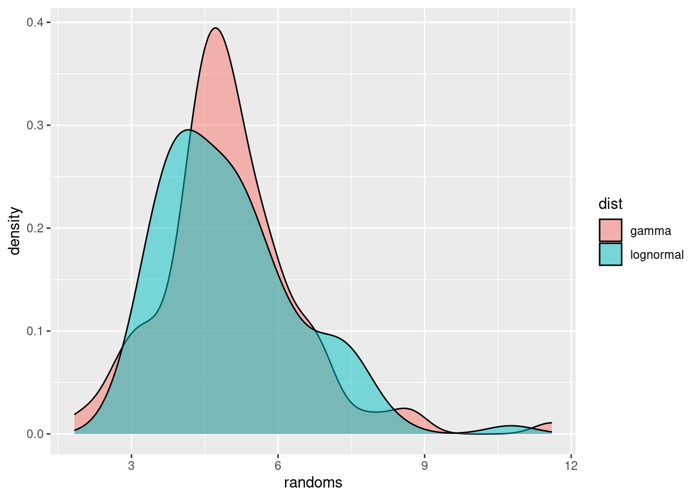
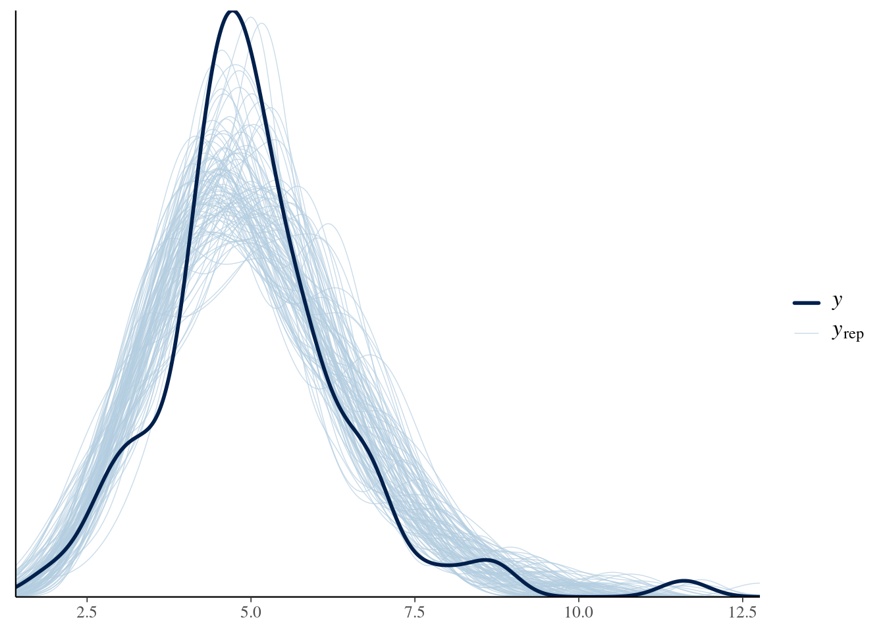

library("ggplot2")
library("here")
library("cmdstanr")
library("bayesplot")
library("posterior")Probability distributions and parameter estimation
Introduction to statistical concepts used in the course
Introduction to stan concepts used in the course
Objectives
The aim of this session is to introduce the concept of probability distributions and how to estimate their parameters using Bayesian inference with stan.
Libraries used
In this session we will use the ggplot2 library for plotting, the here library to find the stan model, and the cmdstanr library for using stan. We will also use the bayesplot and posterior packages for investigating the results of the inference conducted with stan.
Tip
The code in this session can be run as an interactive notebook using RStudio, or copied-and-pasted into an R session. It needs to be run inside the course repository so that the here() commands below find the stan model files.
Simulating data from a probability distribution
First let us simulate some data from a probability distribution. In R, this can is usually done using a family of functions that start with r. For example, to simulate from a normal distribution you would use the rnorm() function. All these functions have a first argument n, the number of random replicates to generate, and then some further arguments that parameterise the probability distribution.
rnorm(n = 10, mean = 0, sd = 1) [1] 0.214958687 -0.539337481 -1.269046047 -0.379584090 -0.007676176
[6] 0.156838001 0.953708123 0.366184833 0.616663204 -2.380809990We will use probability distributions to characterise epidemiological delays. These are usually strictly positive because e.g. one cannot develop symptoms before becoming infected, and therefore the incubation period cannot be less than zero (although it is worth noting that this does not necessarily apply to all distributions, e.g. serial intervals can be negative if person X infects Y but Y develops symptoms first).
Probability distribution that are commonly used in this situation are the gamma or lognormal distributions. These are fairly similar, with one difference being that the lognormal commonly has a “heavier tail” on the right, i.e. gives more probability to occasional very large values, whereas the gamma distribution as more of a tail on the left, i.e. gives more probability to values lower than the mean.
The gamma distribution is characterised by the shape (\(\alpha\)) and rate (\(\beta\)) parameters, with a mean of \(\alpha/\beta\) and variance \(\alpha/\beta^2\). A gamma distribution with mean 5 and variance 2, for example, has \(\alpha = 12.5\) and \(\beta = 2.5\). To simulate from such a distribution, we can use the following R code.
### simulate gamma with mean 5, variance 2
gammas <- rgamma(100, shape = 12.5, rate = 2.5)
head(gammas)[1] 6.657763 3.311606 3.109458 3.179683 2.664725 11.607107mean(gammas)[1] 5.018457var(gammas)[1] 2.042826The lognormal distribution is characterised by the meanlog (\(\mu\)) and sdlog (\(\sigma\)) parameters, with a mean of \(e^{\mu + 0.5\sigma^2}\) and variance \((e^{\sigma^2} - 1) e^{2\mu + \sigma^2}\). A lognormal distribution with mean 5 and variance 2, for example, has (after a bit of calculation) \(\mu = 1.57\) and \(\sigma = 0.28\).
### simulate gamma with mean 5, variance 2
lognormals <- rlnorm(100, meanlog = 1.57, sdlog = 0.28)
head(lognormals)[1] 4.006968 2.754063 2.916571 5.881378 4.022695 7.571720mean(lognormals)[1] 5.014414var(lognormals)[1] 2.004165We can now plot the two distributions.
df <- rbind(
data.frame(dist = "lognormal", randoms = lognormals),
data.frame(dist = "gamma", randoms = gammas)
)
ggplot(df, aes(x = randoms, fill = dist)) +
geom_density(alpha = 0.5)
We have used geom_density() to get smooth lines. Alternatively we could have used, e.g., geom_histogram() to plot the raw data.
Estimating the parameters of probability distributions
We will now use stan to estimate the parameters of the probability distribution. To do so, we first load in the model
### load gamma model from the session directory
mod <- cmdstan_model(here("stan", "gamma.stan"))
### show model code with line numbers
mod$print(line_numbers = TRUE) 1: // gamma_model.stan
2: data {
3: int<lower=0> N;
4: array[N] real y;
5: }
6:
7: parameters {
8: real<lower=0> alpha;
9: real<lower=0> beta;
10: }
11:
12: model {
13: alpha ~ normal(0, 10);
14: beta ~ normal(0, 10);
15: y ~ gamma(alpha, beta);
16: }
Take 5 minutes
Familarise yourself with the model above. Do you understand all the lines? Which line(s) define the parameter prior distribution(s), which one(s) the likelihood, and which one(s) the data that has to be supplied to the model?
Solution
Lines 13 and 14 define the parametric prior distributions (for parameters alpha and beta). Line 15 defines the likelihood. Lines 3 and 4 define the data that has to be supplied to the model.
We use the model we have defined in conjunction with the gamma distributed random numbers generated earlier to see if we can recover the parameters of the gamma distribution used. Once you have familiarised yourself with the model, use the sample() function to fit the model.
stan_data <- list(
N = length(gammas),
y = gammas
)
gamma_fit <- mod$sample(
data = stan_data, refresh = 0, show_exceptions = FALSE, show_messages = FALSE
)
gamma_fit variable mean median sd mad q5 q95 rhat ess_bulk ess_tail
lp__ -170.75 -170.43 1.05 0.73 -172.98 -169.76 1.00 1074 1303
alpha 12.91 12.82 1.79 1.79 10.09 15.94 1.01 565 604
beta 2.57 2.56 0.36 0.37 1.99 3.20 1.01 562 600
Caution
The arguments to mod$sample() after the data argument are there to remove the amount printed to the screen (and in this document). You can remove them and you’ll get more messages from the stan sampler (which can be very useful for diagnosing and debugging).
You can see that the estimates are broadly consistent with the parameters we put in. To investigate this further, we will conduct a so-called posterior predictive check by comparing random numbers simulated using the estimated parameters to the ones we simulated earlier.
## Extract posterior draws
gamma_posterior <- as_draws_df(gamma_fit$draws())
head(gamma_posterior)# A draws_df: 6 iterations, 1 chains, and 3 variables
lp__ alpha beta
1 -170 12 2.4
2 -170 15 3.0
3 -170 15 3.0
4 -170 14 2.8
5 -170 11 2.2
6 -170 12 2.4
# ... hidden reserved variables {'.chain', '.iteration', '.draw'}## Generate posterior predictive samples
gamma_ppc <- sapply(seq_along(gammas), function(i) {
rgamma(n = length(gammas),
shape = gamma_posterior$alpha[i],
rate = gamma_posterior$beta[i])
})
## Plot posterior predictive check
ppc_dens_overlay(y = gammas, yrep = gamma_ppc)
We can see that the random numbers generated from the posterior samples are distributed relatively evenly around the data (in black), i.e. the samples generated earlier that we fitted to.
Going further
- For the model above we chose truncated normal priors with a mode at 0 and standard deviation 10. If you change the parameters of the prior distributions, does it affect the results?
- You could try the model included in
lognormal.stanto estimate parameters of the lognormal distribution.